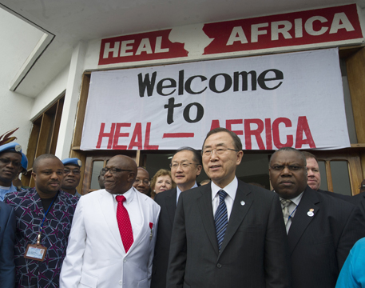
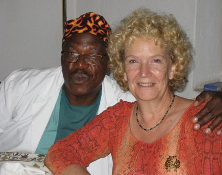
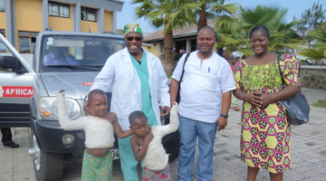

Une organisation chrétienne non-gouvernementale
basée dans la partie Est de la République Démocratique
du Congo et dont la mission est de “Fournir une prise en
charge holistique aux populations les plus vulnérables
de la RDC, en particulier aux femmes et aux enfants,
qui sont les plus touchés par les conflits armés persistants
dans la région. L’activisme de HEAL Africa vise la promotion
d’une communauté saine et résiliente qui reflète l'amour,
la compassion et la justice du Christ.

Pendant de nombreuses décennies,les populations de la République
Démocratique du Congo ont subi les conséquences graves d'un conflit
persistant et généralisé.Utilisant leurs compétences en médecine
et en administration,les fondateurs Dr Jo et son épouse Lyn LUSI
ont créé “Doctors on Call for Service” (DOCS)2000,une organisation
dont le but est de former des professionnels locaux de santé appelés
à servir les communautés souffrantes de la République Démocratique
du Congo (RDC).En 2005,après avoir intégré une approche globale
de la médecine,l'organisation a changé son nom,DOCS à HEAL Africa

Nous fournissons un accès communautaire aux soins de santé.
L’approche holistique des soins que HEAL Africa a mis en place
va au-delà du physique en intégrant les aspects psycho-sociaux,
économiques et spirituels,cela touchant d’abord l'individu pour
ensuite s’étendre vers la communauté.A travers la Santé,l'Education,
l'Activisme communautaire et le développement du Leadership,HEAL
Africa travaille à transformer les communautés locales en
République Démocratiquedu Congo, en partenariat avec des organi-
sations publiques et privées œuvrant sur le territoire national.

HEAL Africa (Health-Education-
community Actio-Leadership) est
une oraganisation chrétienne non-
gouvernementale basée dans la
partie Est de la RD Congo. Réputée
comme centre d’excellence en
matière de formation continue du
personnel soignant dans cette
région à la stabilité incertaine,
l’organisation HEAL Africa fournit un
accès communautaire aux soins de santé.
Historique
Notre équipe
Nos activités
Partaices
Galerie
Faire un don
Appels d'offres
Actualités
Rapports
Nous contacter
Un dépistage volontaire gratuité
pour préven...
2022-11-30
Réparation des malformations
congénitales...
2022-11-28
+243 998 506 304
+243 813 132 342
info@healafricardc.org
Ville de Goma, Commune de
Goma,Rue Lyn LUSI, No